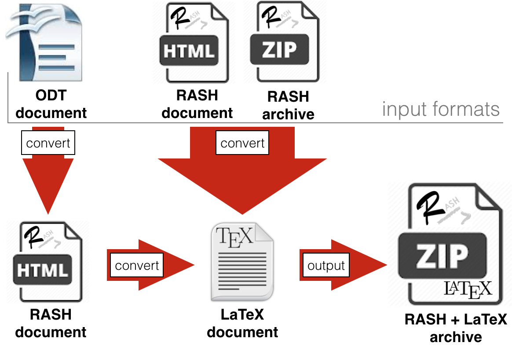

In this poster paper we introduce the RASH Online Conversion Service, i.e., a Web application that allows the conversion of ODT documents into RASH, a HTML-based markup language for writing scholarly articles, and from RASH into LaTeX. This tool allows authors with no experience in HTML to easily produce HTML-based papers and supports the publishing process by generating also a LaTeX version according to the Springer LNCS and ACM ICPS layouts.
The use of HTML as format for writing scholarly papers and submitting them to scholarly venues is a very popular, discussed and trendy topic within the scholarly domain. This is demonstrated by the existence of several posts within technical mailing lists of the Web community , by the birth of W3C community groups on such topic , by the development of HTML-based formats for scholarly articles , and by the increasing number of events that are experimenting with HTML-based formats for submissions, such as the SAVE-SD and LDOW workshops at WWW 2016, and the Extended Semantic Web Conference .
In order to foster a wider adoption of these formats, frameworks for HTML-based papers should support the needs of all the actors involved in the production, delivery and fruition of scholarly articles, with particular regards to authors and publishers. Hence, this solution calls for a number of requirements that go well beyond those used on the Web.
First of all, it is vital to support authors with a variety of tools to provide for an easy transition to the new format. To this end, authors should be allowed to keep using well-known current word processors rather than adopting HTML and/or pure text editors. We thus need to support the conversion from the main word processor formats (e.g., ODT and OOXML) to HTML formats, in particular when authors use only basic features, such as standard styles for paragraphs and tables. In addition, authors should be given the option to focus on the content and let appropriate tools handle the presentation layer after the conversion into the HTML-based format.
Second, frameworks for HTML-based papers should enable papers to be processed in a way that is compliant with existing and well-established publication workflows. Hence, they should be able to be easily formatted according to publishers' guidelines. Of course, publishers, conference, workshop organisers, and even authors would find easier to work with formats they are familiar with, such as LaTeX. To this end, modern HTML formats for research papers should also allow to be converted to standard formats currently adopted by publishers (e.g., LaTeX) and to support specific layouts (e.g., ACM ICPS).
In order to address the aforementioned requirements, we developed the RASH Framework . This framework includes a set of specifications and writing/conversion/extraction tools for writing academic articles in RASH, i.e., a markup language defined as a subset of HTML for writing scientific articles. In this poster we introduce the RASH Online Conversion Service (ROCS), i.e., a Web application that allows converting ODT documents into RASH, and then RASH documents into LaTeX according to some well-established layouts in the scholarly domain, i.e., Springer LNCS and ACM ICPS.
The rest of the paper is structured as follows. After a brief introduction of the RASH Framework in , in we illustrate the main features of ROCS. Finally, in , we conclude the paper sketching out some future works.
The RASH Framework includes a set of specifications and writing/conversion/extraction tools for writing academic articles in HTML by means of the RASH format . RASH is a markup language for writing research articles that restricts the use of HTML elements to only 31 elements. It is possible to include also RDF statements as RDFa annotations and/or as Turtle, JSON-LD and RDF/XML triples by using the tag script
. In addition, RASH strictly follows the Digital Publishing WAI-ARIA Module 1.0 for expressing structural semantics on various markup elements used.
RASH is accompanied by a series of tools for helping the creation/conversion/enrichment of such documents from/into different formats. In addition to the converters, which will be introduced in the following section, the RASH Framework also includes:
a script to enable users to check RASH documents against the specific requirements in the RASH RelaxNG grammar and also against the full set of HTML checks;
a visualisation tool for showing RASH documents on browsers with two different layouts (Web-based and Springer LNCS – the latter is partially based on Linked Research CCSs);
a suite that automatically annotates RASH elements with their actual (structural) semantics according to the Document Components Ontology (DoCO) .
All the converters and the aforementioned tools are all available on the RASH Framework repository on GitHub. It is worth mentioning that RASH was already proposed as one of the possible formats for HTML submissions in several academic events .
We created an online conversion tool called ROCS (RASH Online Conversion Service) for supporting authors in writing RASH documents and preparing submissions to be easily processed by current journals, workshops and conferences (e.g., the Extended Semantic Web Conference 2016). The abstract architecture of the tool is shown in , while the tool is available at http://dasplab.cs.unibo.it/rocs. ROCS allows converting an ODT document, written according to specific guidelines, into RASH and, then, into LaTeX according to either the Springer LNCS or ACM IPCS layouts. Such ODT guidelines are very simple and use only the basic features available in OpenOffice Writer, without using any external tool or plugin.
ROCS is actually based on several other software artefacts that are included in the RASH Framework, i.e.:
an XSLT 2.0 file to perform conversions from OpenOffice documents into RASH documents;
a Java-based application, based on the aforementioned XSLT document, that allows converting OpenOffice documents into RASH documents;
XSLT 2.0 files for converting RASH documents into LaTeX according to the ACM ICPS and Springer LNCS styles.

ROCS allows users to upload three kinds of file, i.e., an ODT document, a HTML file compliant with RASH, and a ZIP archive which contains an HTML file compliant with RASH and related files (i.e., CSSs, javascript files, fonts, images). It returns a ZIP archive containing the original document plus all its converted versions, i.e., RASH, if an ODT file was given, and the LaTeX file.
The main advantage of having the paper both in RASH and in LaTeX is that it is very easy for RASH to be adopted by workshops, conferences or journals. Since, the program committee, the reviews and the editors will also have access to a LaTeX or a PDF version of the paper, the RASH file is an addition that does not preclude any current workflows. Of course, the hope is that the inherent advantages of an HTML-based format such as RASH will eventually persuade stakeholders to adopt the HTML version whenever it will be possible, keeping the alternatives as fallback options.
In this poster paper we introduced ROCS, the RASH Online Conversion Service that allows the conversion of ODT documents to RASH, an HTML-based format, and LaTeX. ROCS, as well as RASH, is part of a larger Framework that includes a set of specifications and tools for writing academic articles in HTML+RDF. We are currently developing additional XSLT documents in order to convert DOCX documents into RASH and to convert RASH documents into several different LaTeX and XML-based formats for scholarly communications, such as ACM journals and EPUB3 . We are also studying possible strategies for the development of conversion tools from LaTeX files, in particular compliant with the Springer LNCS and the ACM ICPS layouts, into RASH documents.
Di Iorio, A., Nuzzolese, A. G., Osborne, F., Peroni, S., Poggi, F., Smith, M., Vitali, F. Zhao, J. (2015). The RASH Framework: enabling HTML+RDF submissions in scholarly venues. In Proceedings of the poster and demo session of ISWC 2015. http://ceur-ws.org/Vol-1486/paper_72.pdf
Garrish, M., Siegman, T., Gylling, M., McCarron, S. (2015). Digital Publishing WAI-ARIA Module 1.0. W3C Working Draft 19 November 2015. http://www.w3.org/TR/dpub-aria-1.0/
Capadisli, S., Riedl, R., Auer, S. (2015). Enabling Accessible Knowledge. In Proceedings of CeDEM 2015. http://csarven.ca/enabling-accessible-knowledge
Constantin, A., Peroni, S., Pettifer, S., Shotton, D., Vitali, F. (2016). The Document Components Ontology (DoCO). In Semantic Web, 7 (2). http://dx.doi.org/10.3233/SW-150177
Conboy, G., Garrish, M., Gylling, M., McCoy, W., Makoto, M., Weck, D. (2014). EPUB 3 Overview. Recommended Specification 26 June 2014. http://www.idpf.org/epub/301/spec/epub-overview.html
https://lists.w3.org/Archives/Public/public-lod/2014Oct/0058.html
https://github.com/w3c/scholarly-html/blob/gh-pages/prior-art.md
https://rawgit.com/essepuntato/rash/master/documentation/index.html
https://github.com/essepuntato/rash/#venues-that-have-adopted-rash-as-submission-format
https://rawgit.com/essepuntato/rash/master/documentation/rash-in-odt.odt